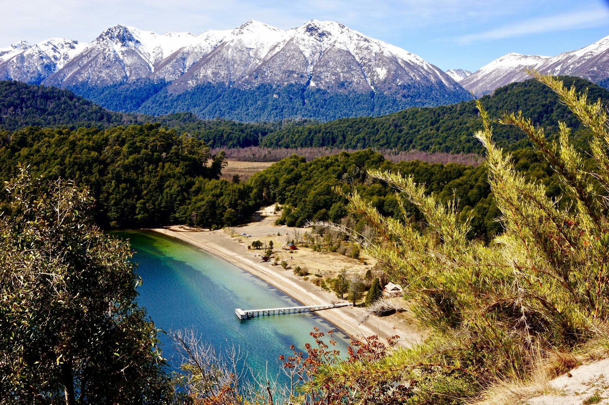
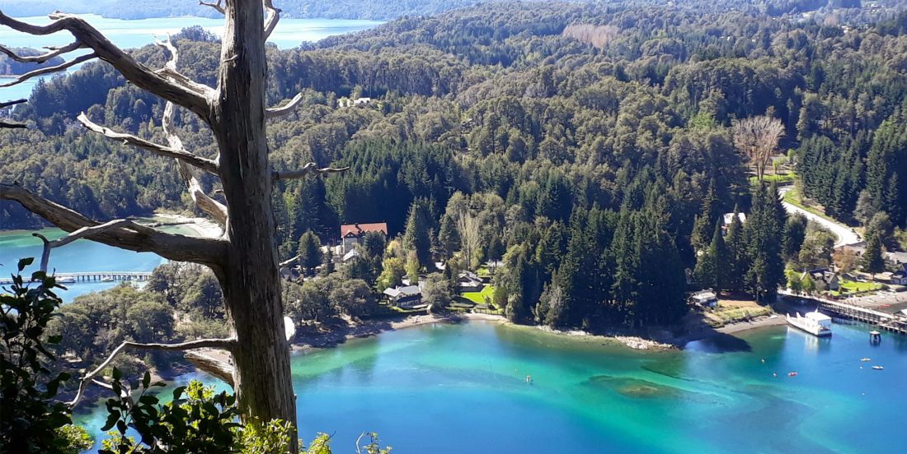

Villa La Angostura es una ciudad de Argentina, ubicada en el departamento Los Lagos, en el sur de la provincia del Neuquén en la Patagonia. Enclavada en el sector norte del parque nacional Nahuel Huapi, rodeada de lagos, bosques y montañas, es considerada una de las localidades más bonitas de la Patagonia cordillerana, ganándose el apodo de «Jardín de la Patagonia». A pocos kilómetros se encuentra el paso fronterizo con Chile, Cardenal Samoré, y junto a otras localidades cercanas, como San Carlos de Bariloche y San Martín de los Andes conforman un corredor turístico de gran popularidad tanto en la época estival como en la invernal.
Villa la Angostura es una ciudad de faldeo relativamente pequeña rodeada de bosque nativo, ubicada a 780 msnm sobre la margen este de la cordillera de los Andes. Al norte y este limita con los cerros Bayo (1.782 m), Inacayal (1.840 m) y Belvedere (1.992 m), y al sur y oeste con el lago Nahuel Huapi. Es dividida en dos por el arroyo Las piedritas. El Cruce -denominación del centro comercial-, al igual que otros barrios se encuentra construido sobre mallines rellenos. El suelo es arenoso y muy escaso de arcillas, que si bien permite un drenaje intenso, su débil capa de humus lo deja expuesto a la erosión. En la zona denominada el puerto, se encuentra el ingreso al parque nacional Los Arrayanes. Un sendero peatonal de 12 km atraviesa toda la península Quetrihue, y permite llegar por tierra al parque nacional, donde la planta de arrayán crece en forma de árbol y no de arbusto, formando un tupido bosque.